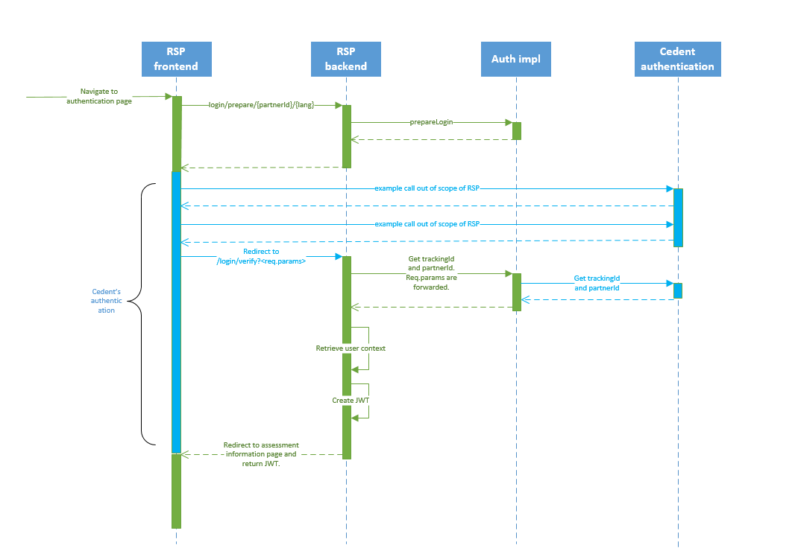
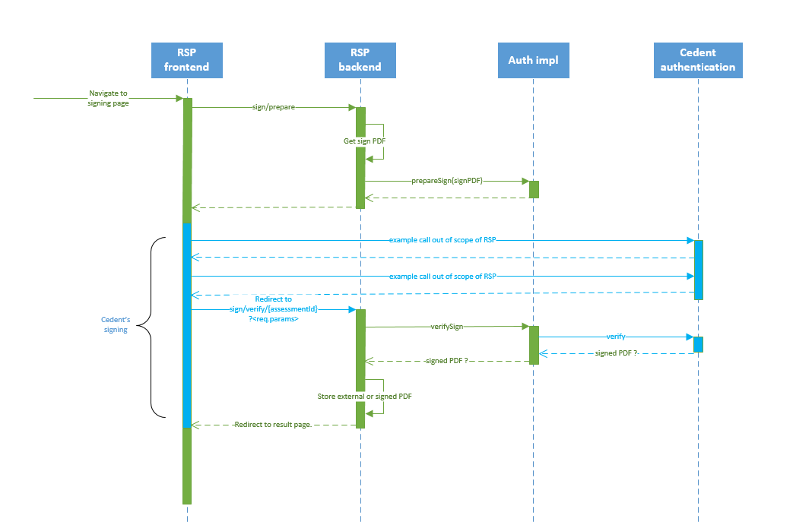
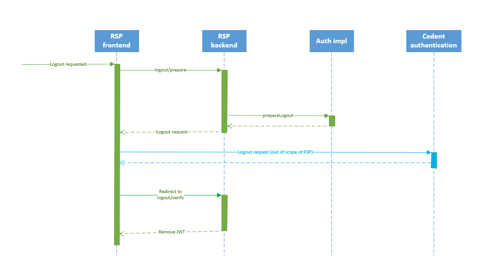

Authentication Interface
Interface
Authentication, signing and logout is generic in the RSP. This means that there is no specific implementation available to handle the authentication. There is only an interface available (see below) which needs an implementation that has to be provided at runtime. The RSP also provides an iframe on the authentication page in which the authentication UI should be presented.
public interface Authentication {
void setConfig(Map<String, String> config) throws Exception;
String prepareLogin(Map<String, String> requestParams, String partnerId, String language) throws Exception;
String getTrackingId(Map<String, String> requestParams, Map<String, String> requestHeaders) throws Exception;
String getPartnerId(Map<String, String> requestParams) throws Exception;
String prepareLogout(Map<String, String> requestParams) throws Exception;
String prepareSign(Map<String, String> requestParams, String trackingId, String assessmentId, byte[] pdfDocument, String language) throws Exception;
byte[] verifySign(Map<String, String> requestParams, String assessmentId, Map<String, String> requestHeaders) throws Exception;
}
The interface is provided by a JAR file to be included in <tomcat-home>/lib at runtime.
The implementation class has to implement the interface above and its fully qualified class name must be provided in <reflex-config>/rsp/config.properties.
com.hannoverre.reflex.rsp.services.authentication.implementationClassName=com.hannoverre.reflex.rsp.authentication.AuthenticationImpl
Right after the implementation is loaded, the setConfig method is called which reads the com.hannoverre.reflex.rsp.auth.implconfig property from <reflex-config>/rsp/config.properties. This enables an integrator to make the implementation configurable. Note that this config is not a single value but rather a key/value map.
com.hannoverre.reflex.rsp.auth.implconfig={key1:"value1", key2:"value2", ...}
The implementation class should be packaged in a JAR file and then be placed in <tomcat-home>/lib before starting tomcat.
Authentication
The following methods are involved in the authentication:
- setConfig,
- prepareLogin,
- getTrackingId and
- getPartnerId.
The flow of the authentication process is presented below. Further details are listed below the picture.

- The user navigates to the authentication page. The normal scenario is that the user is continuing from the welcome page which triggers the authentication.
- The authentication page consists of an iframe and the source of the iframe is retrieved from the backend using the implementation of prepareLogin.
- Content is loaded in the iframe of the authentication page. This will be the UI of the authentication process. Note that this content is not in scope of the RSP. The same applies to its behaviour which could be whatever the integrator decides. The only requirement is that the user is redirected to the
/login/verifyendpoint in the end. /login/verify(verifyLogin) will call getTrackingId and getPartnerId of the authentication implementation which in turn can use external resources to resolve trackingId and/or partnerId.- The user context is then retrieved in the RSP based on the trackingId and partnerId. An error is thrown if no user context is found in the RSP.
- Finally a JWT is created and returned as a cookie to the client. The JWT provides access to the user specific pages of the RSP. The user is redirected to the assessment information page.
Interface description
Below are the interface methods along with more detailed descriptions.
setConfig
Right after the implementation is loaded, the setConfig method is called which reads the com.hannoverre.reflex.rsp.auth.implconfig property from <reflex-config>/rsp/config.properties. This enables an integrator to make the implementation configurable. Note that this config is not a single value but rather a key/value map.
com.hannoverre.reflex.rsp.auth.implconfig={key1:"value1", key2:"value2", ...}
prepareLogin
This method is used to get the URL of the identity provider service. The implementation is expected to assemble the URL from e.g. configured values, language and partnerId.
A short example with code:
Let’s say the config contains com.hannoverre.reflex.rsp.auth.implconfig={loginLocation:"https://some-eident-provider.com", serviceId:"123456"} and “en” is set as the frontend language and the partnerId used is “00000”. Then the following implementation
public String prepareLogin(Map<String, String> requestParams, String partnerId, String language) throws Exception {
String langCode;
switch (language) {
case "no":
langCode = "&locale=nb_NO";
break;
case "en":
langCode = "&locale=en_GB";
break;
case "da":
langCode = "&locale=da_DK";
break;
case "sv":
langCode = "&locale=sv_SE";
break;
default:
langCode = "";
}
return config.get("loginLocation") + "?service-id=" + config.get("serviceId") + langCode + "&TARGET=" + partnerId;
}
would assemble the URL https://some-eident-provider.com?service-id=123456&locale=en_GB&TARGET=00000 which would be used to load the content of the authentication iframe.
getTrackingId and getPartnerId
The identity provider is expected to redirect the user’s browser to /login/verify along with request parameters needed for verification. /login/verify will invoke getTrackingId() and getPartnerId() of the authentication implementation with the request parameters as input.
Below is an example implementation using Nets SAML authentication. getTrackingId() is making use of the SAML artifact provided from the identity provider to verify (assert) the authentication. This assertion is an external call to the identity provider using the SAML artifact. The trackingId is retrieved from the assertion response and is then returned.
public String getTrackingId(Map<String, String> requestParams) throws Exception {
String artifact = requestParams.get("SAMLart");
Properties jsamleConfig = new Properties();
jsamleConfig.put("assertionurl",
config.get("assertionUrl"));
...
JSAMLE2 jsamle2 = new JSAMLE2(jsamleConfig);
AssertionWrapper assertionWrapper = jsamle2.getAssertion(artifact);
String authmethod = assertionWrapper.getAuthenticationStatement().getAuthenticationMethod();
if (authmethod != null) {
Map<String, String> assertionMap = assertionWrapper.getInfoItem();
String trackingId = assertionMap.get("ssn");
if (trackingId == null) {
trackingId = assertionMap.get("DK_SSN");
}
if (trackingId == null) {
trackingId = assertionMap.get("NO_SSN");
}
if (trackingId == null) {
trackingId = assertionMap.get("SE_SSN");
}
if (trackingId == null) {
throw new AssertionException("Could not find SSN");
}
return trackingId;
} else {
throw new Exception("AuthMethod was null in response!");
}
}
getPartnerId() also uses the request parameters passed from the identity provider. Below is an example in which the identity provider has passed along the TARGET parameter used in the auth iframe URL.
public String getPartnerId(Map<String, String> requestParams) throws Exception {
String partnerId = requestParams.get("TARGET");
if (!partnerId.isEmpty()) {
return partnerId;
} else {
throw new Exception("Missing partnerId in TARGET");
}
}
After a successful verification of the user, /login/verify will create a JWT to be used in the RSP. The JWT will be returned as a cookie and headers are set to redirect the user to the assessment information page in the RSP.
E-Signing
The following methods are involved in the e-signing:
- setConfig,
- prepareSign and
- verifySign.
The flow of the e-signing process is presented below. Further details are listed below the picture.

- The user navigates to the signing page. The normal scenario is that the user i continuing from the review page.
- The signing page consists of an iframe and the source of the iframe is retrieved from the backend using the implementation of prepareSign. Before the RSP core calls prepareSign, the sign PDF is created and passed to signPrepare. This is to enable a signing process in which a PDF is signed.
- Content is loaded in the iframe of the signing page. This will be the UI of the signing process. Note that this content is not in scope of the RSP. The same applies to its behaviour which could be whatever the integrator decides. The only requirement is that the user is redirected to the
/sign/verifyendpoint in the end. /sign/verify(verifySign) will call verifySign of the implementation which in turn can use external resources to perform the actual verification. The signed PDF can be returned in this step.- Either the signed PDF or the external (customer) PDF is then stored in the user context.
- Finally the user is redirected to the assessment result page.
Logout
The following methods are involved in the logout:
- setConfig and
- prepareLogout.
Below is a description of logout process.

- Whenever the user clicks the logout button,
/logout/prepareis called. - prepareLogout of the authentication implementation is then called. prepareLogout should return the logout URL.
- The logout URL is called.
/logout/verifyis called which sets cookie headers to remove the JWT created during authentication.